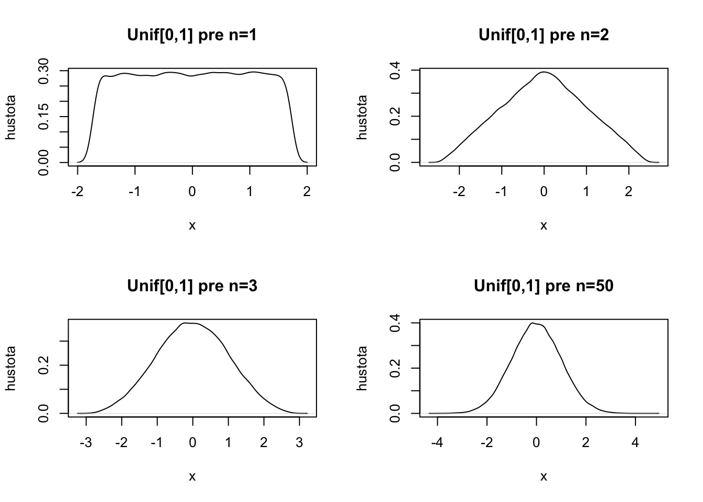
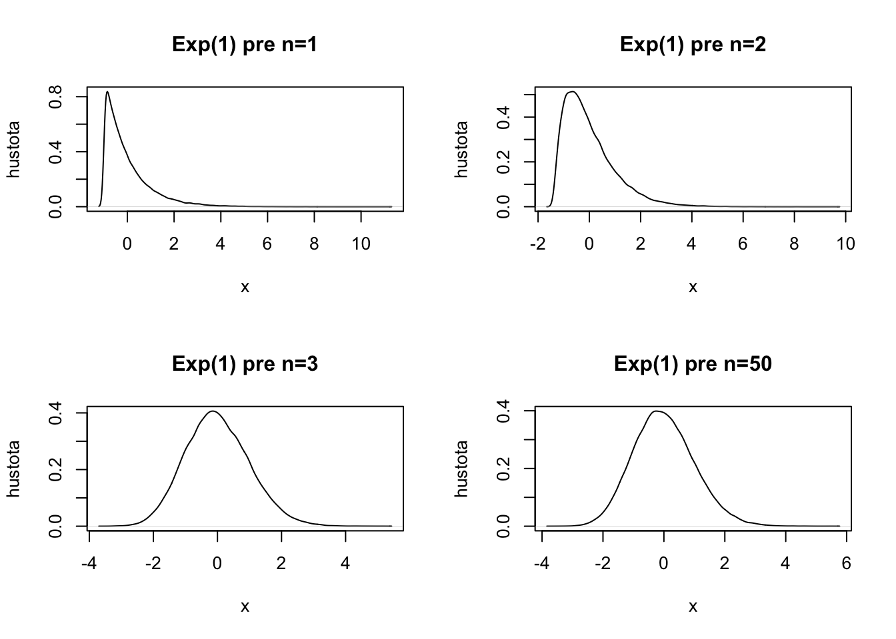
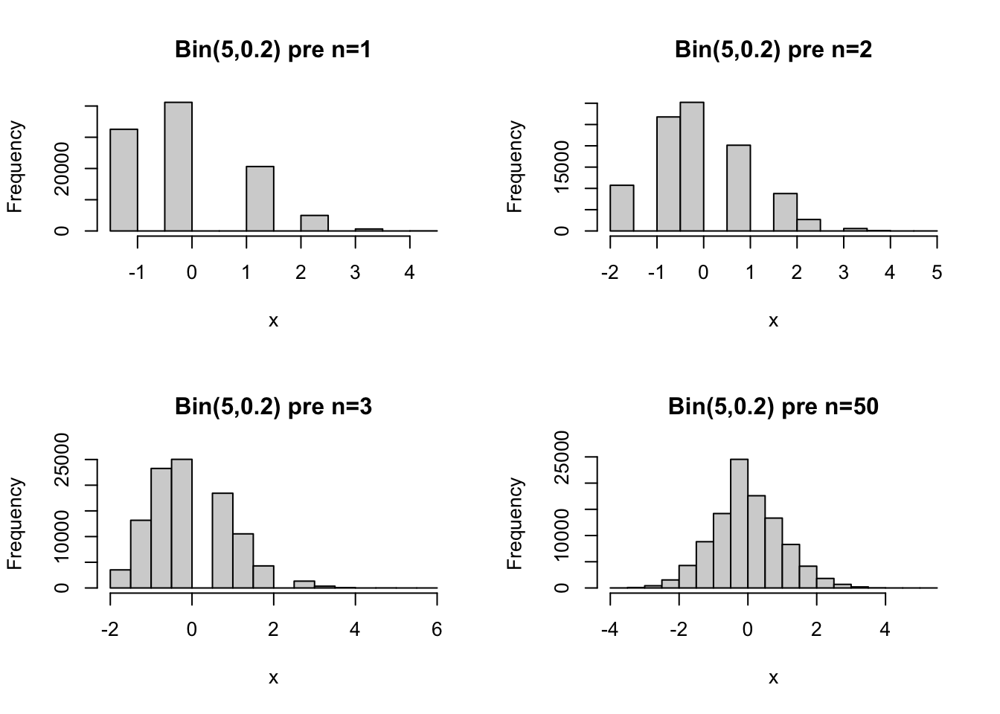
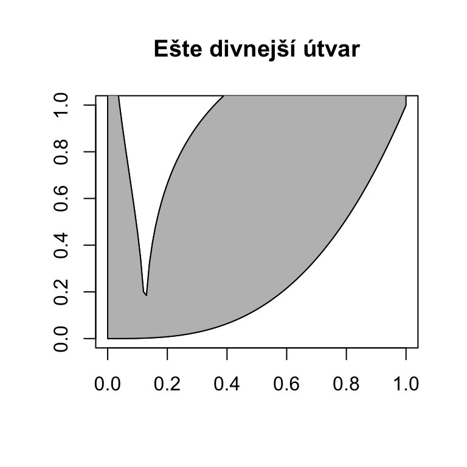

9 Centrálna limitná veta
Normálne rozdelenie hrá prekvapivo dôležitú úlohu v teórii pravdepodobnosti a v štatistike. Ukazuje sa, že aritmetický priemer z nezávislých, ale rovnako rozdelených náhodných premenných, pokiaľ je počítaný z dostatočne veľkého množstva premenných, sa správa ako normálne rozdelená náhodná premenná.
9.1 Konvergencia podľa distribúcie
V minulej kapitole sme si predstavili jeden zo spôsobov, ako sa môže postupnosť náhodných premenných blížiť k nejakej náhodnej premennej, konkrétne konvergenciu podľa pravdepodobnosti. Existuje aj iný spôsob. Niekedy chceme uvažovať situáciu, že pravdepodobnostné správnanie prvkov postupnosti náhodných premenných sa stále viacej a viacej podobá na pravdepodobnostné správanie akejsi limitnej náhodnej premennej.
Hovoríme, že postupnosť náhodných premenných \(\{X_i\}_{i=1}^{\infty}\) konverguje podľa distribúcie k náhodnej premennej \(X\), ak platí pre všetky body \(x\) spojitosti funkcie \(F_X\):
\[\lim_{n \rightarrow \infty}F_{X_n}(x) = F_X(x),\] Označujeme \(X_n \rightarrow_D X.\)
Veta 9.1 Platí \[X_n \rightarrow_P X \implies X_n \rightarrow_D X.\]
Dôkaz. Nakoľko platí \(\{ X_n \leq x\} \subset \{ X \leq x + \epsilon\} \cup \{|X-X_n| > \epsilon\}\) (lebo ak platí \(X_n \leq x\) a \(X > x + \epsilon\), potom nutne aj \(|X-X_n| > \epsilon\)), dostávame: \[\begin{eqnarray*} P(X_n \leq x) &\leq& P(X \leq x + \epsilon) + P(|X_n - X|>\epsilon). \end{eqnarray*}\] Podobnou úvahou dostaneme
\[\begin{eqnarray*} P(X \leq x-\epsilon) &\leq& P(X_n \leq x) + P(|X_n - X|>\epsilon). \end{eqnarray*}\]
Preto platí
\[P(X \leq x-\epsilon) - P(|X_n - X|>\epsilon) \leq P(X_n \leq x) \leq P(X \leq x + \epsilon) + P(|X_n - X|>\epsilon).\]
Ak aplikujeme operátor limity na tieto nerovnosti, spolu s využitím definície konvergencie podľa pravdepodobnosti dostávame
\[F_{X}(x-\epsilon) \leq \lim_{n \rightarrow \infty}P(X_n \leq x) \leq F_{X}(x+\epsilon),\] a tieto nerovnosti platia pre akékoľvek \(\epsilon.\)
V bode spojitosti \(F_X\) platí \(\lim_{\epsilon \rightarrow 0}F_{X}(x-\epsilon) = \lim_{\epsilon \rightarrow 0}F_{X}(x+\epsilon) = F_X(x),\) a preto \(\lim_{n \rightarrow \infty}P(X_n \leq x) = F_X(x)\), čo sme chceli ukázať.
9.2 Centrálna limitná veta
Veta 9.2 Majme postupnosť nezávislých a rovnako rozdelených náhodných premenných \(X_1, X_2, X_3, \dots\) s konečnou strednou hodnotou \(\mu\) a konečnou varianciou \(\sigma^2.\) Potom platí
\[\sqrt{n}\frac{\bar{X}_n - \mu}{\sigma} \rightarrow_D Z,\]
kde \(Z \sim \text{N}(0,1).\)
Alternatívnym zápisom je, že ak označíme \(Y_n = \sqrt{n}\frac{\bar{X}_n - \mu}{\sigma},\) potom
\[\forall x \in \mathbb{R}: \lim_{n \rightarrow \infty}F_{Y_n}(x) = \Phi(x).\]
Dôkaz je nad rámec tohoto kurzu, a preto ho vynechávame.
Tu je ilustrácie pre rovnomerné rozdelenie. Ide o obrázky odhadov funkcie hustoty. Napriek veľkému množstvu simulácií nie sú úplne hladké, viacej o takýchto odhadoch hustôt sa naučíme na druhom kurze regresie.

Tu pre exponenciálne rozdelenie:

A tu pre binomické rozdelenie:

Toto má dôležité praktické dôsledky. My vôbec nemusíme vedieť, aké má nejaká náhodná pravdepodobnostné rozdelenie. Ale vieme, že priemer nezávislých náhodných premenných sa už bude správať systematicky(!). Toto je veľmi všeobecný výsledok. Na tomto poznatku je založených mnoho štatistických testov.
Príklad 9.1 Hádžeme férovou kockou 900 krát. Ideme aproximovať pravdepodobnosť, že uvidíme viacej ako 495 hláv. Každý hod mincou \(X_i \sim \text{Bern}(0.5)\) a \(\text{E}[X_i] = 0.5, \text{Var}[X_i] = 0.25.\)
Preto
\[\begin{eqnarray*} P\left(\sum_{i=1}^{900} X_i > 495\right)&=& P\left(\frac{\sum_{i=1}^{900} X_i}{900} > \frac{495}{900}\right) \\ &=& P\left(\bar{X}_n - 0.5 > \frac{495}{900} -0.5\right)\\ &=& P\left(\frac{\bar{X}_n - 0.5}{0.5} > \frac{\frac{495}{900} -0.5}{0.5}\right)\\ &=& P\left(\sqrt{900}\frac{\bar{X}_n - 0.5}{0.5} > \sqrt{900}\frac{\frac{495}{900} -0.5}{0.5}\right)\\ &=& P\left(\sqrt{900}\frac{\bar{X}_n - 0.5}{0.5} > 30\frac{\frac{495}{900} -0.5}{0.5}\right)\\ &=& P\left(\sqrt{900}\frac{\bar{X}_n - 0.5}{0.5} > 3\right)\\ &\approx& 1-\Phi(3) = 0.0013 \end{eqnarray*}\]
Princíp výpočtu takýchto aproximácií je vždy rovnaký. Začneme s tým, čo chceme vypočítať a ekvivalentnými úpravami to prevedieme na formuláciu CLV.
Príklad 9.2 Majme nezávislé \(X_1, X_2, \cdots X_{12}\) kde \(X_i \sim \text{Unif}[0,1].\) Pomocou CLV aproximujte \(P(|\bar{X}_n - 0.5| \leq 0.1).\) \[\begin{eqnarray*} P(|\bar{X}_n - 0.5| \leq 0.1) &=& P(\sqrt{12}(\bar{X}_n - 0.5)| \leq \sqrt{12}\cdot 0.1)\\ &=& P\left(\left|\sqrt{12}\frac{\bar{X}_n - 0.5}{\sqrt{\frac{1}{12}}}\right| \leq \sqrt{12}\frac{0.1}{\sqrt{\frac{1}{12}}}\right)\\ &=& P\left(\left|\sqrt{12}\frac{\bar{X}_n - 0.5}{\sqrt{\frac{1}{12}}}\right| \leq 1.2\right)\\ &\approx& \Phi(1.2) - \Phi(-1.2) = 0.7698. \end{eqnarray*}\]
Využili sme skutočnosť, že \(\sqrt{n}\frac{\bar{X}_n - \mu}{\sigma}\) je približne normovane normálne rozdelená náhodná premenná (\(\text{N}(0,1)\)).
9.3 Cvičenia
Cvičenie 9.1 Majme postupnosť nezávislých a rovnako rozdelených náhodných premenných \(X_1,X_2,X_3,\cdots\), kde \(X_1 \sim \text{Exp}(1).\)
Aké veľké musí byť \(n\) aby platilo \(P(0.9 \leq \bar{X}_n \leq 1.1)\geq 0.9\) ?
Cvičenie 9.2 Výťah unesie 4tony nákladu. Majme 100 krabíc, každá s priemernou váhou 39kg a so smerodajnou odchýlkou 2kg. Aproximujte pravdepodobnosť, že výťah bude preťažený.
Cvičenie 9.3 Majme postupnosť nezávislých a rovnako rozdelených náhodných premenných \(X_1,X_2,X_3,\cdots\), kde \(\text{E}[X_1] = 200, \text{Var}[X_1]=40, n=100.\)
Aproximujte pomocou CLV hodnotu \(P(190 \leq \bar{X}_n \leq 210)\).
Domáca úloha 8
Prosím odovzdať do 1.5.2024 do 19:59.
Cvičenie 9.4 (DÚ 8.1) Na Deň otvorených dverí príde 100 hostí. Každý hosť si zoberie 0, 1 alebo 2 brožúry o Katedre matematiky s pravdepodobnosťou 1/4, 1/2 a 1/4. Ľudia si brožúry berú nezávisle. Koľko brožúr musíme dať vytlačiť, aby sme si boli na 97% istí, že nebudú chýbať?
Porovnajte výsledky, ktoré dostanete:
- aplikovaním Markovovej nerovnosti
- pomocou Centrálnej limitnej vety
Cvičenie 9.5 (DÚ 8.2) Máme produkt, o ktorého kazivosti vieme, že je 0.1%. V poslednej objednávke, v ktorej bolo 1200ks týchto produktov sme pozorovali 4 chybné produkty, čo sa nám zdá dosť veľa. Aká je pravdepodobnosť, že by sme pozorovali 4 alebo viacej chybných produktov?
Porovnajte výsledky, ktoré dostanete:
- aplikovaním Markovovej nerovnosti
- priamym výpočtom pomocou Binomického rozdelenia
- aproximáciou Binomického rozdelenia pomocou Poissonoveho rozdelenia
- aproximáciou pomocou Centrálnej limitnej vety
Cvičenie 9.6 (DÚ 8.3) Predstavte, že by ste simulačne chceli odhadnúť obsah tohoto útvaru, ktorý je ohraničený krivkami, ktorých predpis teraz nepoznáme. Budeme uniformne náhodne vyberať \(X\) a \(Y\) a pozerať sa, aká proporcia \((X,Y)\) padne medzi tieto krivky.

Odhadnite koľko najmenej simulácií by ste potrebovali, aby ste mali zagarantované, že odhadnete skutočný obsah s presnosťou 0.001 s pravdepodobnosťou aspoň \(99.9\%\).
Cvičenie 9.7 (DÚ 8.4) V populácii máme \(8.2\%\) farboslepých ľudí. Náhodne vyberieme \(n\) ľudí do prieskumu, pýtame sa ich a predpokladáme, že nám hovoria pravdu.
- Aká je pravdepodobnosť, že podiel farboslepých ľudí v našej vzorke sa od reality bude líšiť o viac ako \(2\) percentuálne body, ak vezmeme vzorku \(200\), resp. \(5000\) ľudí? Odpovedzte (obidve)
- pomocou Čebyševovej nerovnosti
- na základe aproximácie pomocou Centrálnej limitnej vety.
- Koľkých ľudí sa musíme opýtať, ak chceme, aby sa s \(90\%\)-tnou istotou podiel farboslepých ľudí v našej vzorke líšil od reality najviac o \(1\) percentuálny bod? Odpovedzte (obidve)
- pomocou Čebyševovej nerovnosti
- na základe aproximácie pomocou Centrálnej limitnej vety.
Cvičenie 9.8 (DÚ 8.5) Ukážte, že platí
\[P(|X-\text{E}[X]|\geq \epsilon) \leq \frac{1}{\epsilon}\text{E}[|X-\text{E}[X]|].\]
Cvičenie 9.9 (DÚ 8.6 BONUS (+30%)) Zvažujete kúpu konkrétneho bicykla, ktorý sa predáva v dvoch rôznych obchodoch. Prvý obchod Anaconda bicycles reportuje, že 19 z 20 ľudí bolo s týmto bicyklom spokojných. U druhého obchodu Borisove bicykle bolo 92 z 100 ľudí spokojných. Nech náhodné premenné \(X_A \sim Bin(20,p)\) a \(X_B \sim Bin(100,p)\) označujú počty ľudí spokojných s tými bicyklami v daných obchodoch. Predpokladajme, že informácie o spokojnosti zákazníkov, ktoré pozorujeme nie je systematicky oveľa viacej alebo menej kvalitné, čo kvantifikujeme nasledovným spôsobom \[|P(X_A \geq 19) - P(X_B \geq 92)| < 0.05.\] Naviac predpokladajme, že \(p>0.8.\)
Ako veľmi sú ľudia spokojní? Inými slovami, aké hodnoty pravdepodobnosti \(p\) sú v súlade s týmito predpokladmi?